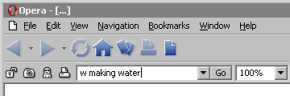

Wiki Integration/Browser Search
Browser searches plug into your web browser's toolbar or sidebar search system, adding Unreal Wiki as an extra engine to search with.
See Wiki Integration for more ideas for different applications.
Mozilla and Firefox keyword search
In Mozilla,  Firefox, and other Gecko browsers, add the following URL as a bookmark and set a keyword (such as "uw" or "unreal") to perform quick searches in the address bar:
Firefox, and other Gecko browsers, add the following URL as a bookmark and set a keyword (such as "uw" or "unreal") to perform quick searches in the address bar:
http://wiki.beyondunreal.com/wiki?search=%s
Sidebar Search
Mozilla & Firefox
![[integration-mozilla-search-sidebar]](images/integration-mozilla-search-s.gif) |
Conveniently search the Unreal Wiki from Mozilla's search sidebar or Firefox's toolbar search. Install
UninstallRemove |
Alternatively, you could make your own searchplugin using the following code as a guide:
<search version="7.1" name="UnrealWiki Search" description="UnrealWiki - Search the UnrealWiki website." action="http://wiki.beyondunreal.com/wiki" searchForm="http://wiki.beyondunreal.com/wiki" method="GET" > <input name="search" user> <interpret resultListStart="<!-- RESULT LIST START -->" resultListEnd="<!-- RESULT LIST END -->" resultItemStart="<!-- RESULT ITEM START -->" resultItemEnd="<!-- RESULT ITEM END -->" > </search> <browser update="http://mycroft.mozdev.org/update.php/id0/unrealwiki.src" updateIcon="http://mycroft.mozdev.org/update.php/id0/unrealwiki.png" updateCheckDays="7" >
Simply save that as a .src file. Place it in your searchplugins folder, and within that same folder, include a 16x16 PNG file for the icon. (Make sure the PNG is named the same as the *.src
Note that the browser tag is only there for mycroft.org submission. You don't really need it.
Opera
With just a bit of manual work, you can neatly integrate Unreal Wiki's search feature into Opera's other search features.
Note that this overrides the standard search number 8 defined in To display the dedicated Unreal Wiki search box in the Personal Bar, enable it in the Show searches submenu of the Personal Bar's right-click menu. (The Unreal Wiki search is also available from the Search with submenu when you double-click on a term on a web page.) |

![[integration-opera-search-personalbar]](images/integration-opera-search-per.gif) |
Opera 9+
Opera 9 and above has the ability to edit the search engine list directly from the Tools→Preferences menu. Just click Tools, Preferences, and open the Search tab. Press Add, enter UnrealWiki for the name, enter a shortcut, and use http://wiki.beyondunreal.com/wiki?search=%s for the URL.
Suggestion
Tarquin: I've submitted the search file to http://mycroft.mozdev.org/index.html – then users would be able to install it with one click.
Copperman: Putting the unrealwiki.src into firefox searchplugin works too  just needs an icon.
just needs an icon.
Bonehed316: An icon? Like...this: ![[unrealwiki]](images/unrealwiki.gif) ? I've had this for a while, but finally decided to post it. Unfortunately the name must match the .src file, so either someone should modify the link above to refer to a zip file with the icon included (and delete the icon from the images), or ... do nothing and hope people figure it out.
? I've had this for a while, but finally decided to post it. Unfortunately the name must match the .src file, so either someone should modify the link above to refer to a zip file with the icon included (and delete the icon from the images), or ... do nothing and hope people figure it out. 
Copperman: I've fixed and successfully uploaded the unrealwiki.src and icon to Mycroft. It needed a couple of extra lines in the code. Sorry if I haven't credited anyone, no provision in the form  . Anyway, it's up and it works.
. Anyway, it's up and it works.
P.S. Uploaded a better re-write today. Contains better header, a couple of bug fixes and also credits for all concerned. Get it from [this link] and enjoy intigrated UnrealWiki searching.
Copperman: Please use and judge the plugin. Hope it works.
~~ I've put a link on Featured Pages. Can someone mention this to the BU news posters? BTW, the plugin is in the 'internet' category. YOu sure that's right? I would have put it under games or programming... but never mind 
PsychoJoe: It seems the searchplugin is no longer on mycroft.mozdev.org. I've made a new one, and if for some reason it gets deleted off mycroft, I have the ZIP file too, which you can just extract to your searchplugins folder. Get it here: http://mycroft.mozdev.org/download.html?name=unreal&submitform=Find+search+plugins
I've added the code for making your own .src search plugin for Mozilla/FireFox.